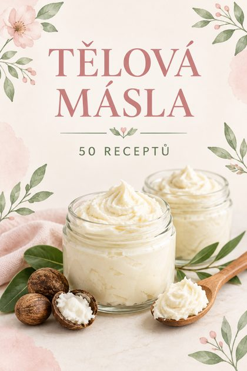
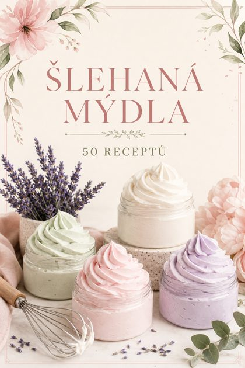
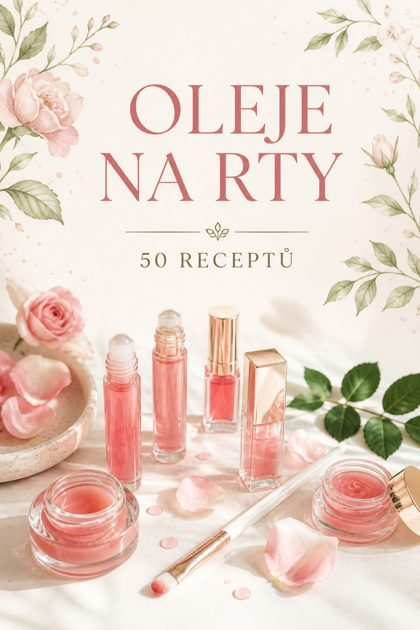
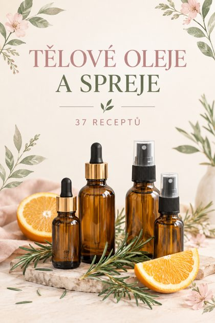
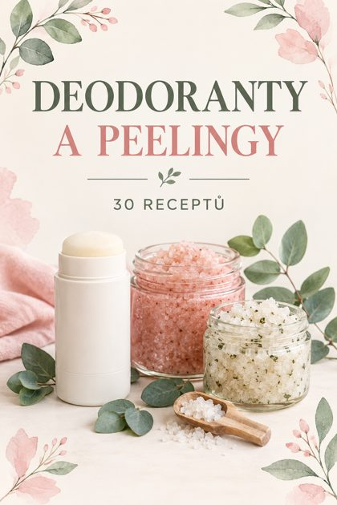
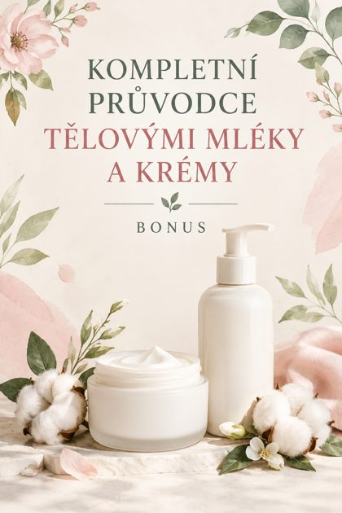

Kompletní sbírka
Všech 217 receptů + příručka + bonus v jednom souboru · 265 stran · PDF 25 MB
Nebo si vyber kategorii
Příručka · Než začnešZáklady domácí kosmetiky
10 stran · PDF 0.2 MB

Kategorie 1 · 50 receptůTělová másla
54 stran · PDF 6.1 MB

Kategorie 2 · 50 receptůŠlehaná mýdla
54 stran · PDF 6.2 MB

Kategorie 3 · 50 receptůOleje na rty
54 stran · PDF 5.8 MB

Kategorie 4 · 37 receptůTělové oleje a spreje
41 stran · PDF 4.4 MB

Kategorie 5 · 30 receptůDeodoranty a peelingy
34 stran · PDF 4.0 MB

Bonus · BonusPrůvodce tělovými mléky a krémy
18 stran · PDF 0.4 MB
Jak začít
- Přečti si příručku se základy – nářadí, suroviny, čistota a bezpečnost.
- Začni nejjednodušším receptem, třeba tělovým máslem nebo olejem na rty.
- Surovinu odvažuj na kuchyňské váze a nádoby si vždy vydezinfikuj.
- Před prvním použitím udělej test na malé ploše pokožky a počkej 24 hodin.
Pokud se stahování nespustí, klepni na „Otevřít“ a soubor ulož v prohlížeči. Sbírka nenahrazuje lékařskou radu.